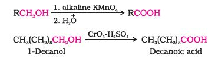
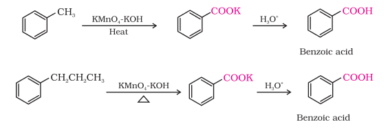
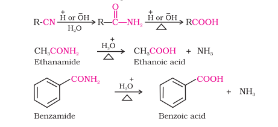
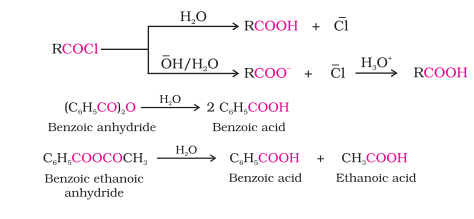
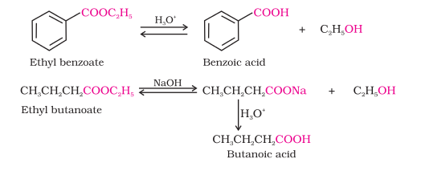
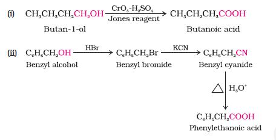
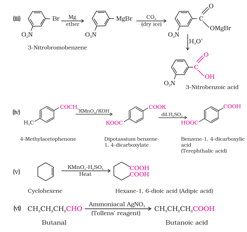

Some important methods of preparation of carboxylic acids are as follows.
1. From primary alcohols and aldehydes
Primary alcohols are readily oxidised to carboxylic acids with common oxidising agents such as potassium permanganate (KMnO4) in neutral, acidic or alkaline media or by potassium dichromate (K2Cr2O7) and chromium trioxide (CrO3) in acidic media.
Carboxylic acids are also prepared from aldehydes by the use of mild oxidising agents (Section 12.4).
2. From alkylbenzenes
Aromatic carboxylic acids can be prepared by vigorous oxidation of alkyl benzenes with chromic acid or acidic or alkaline potassium permanganate. The entire side chain is oxidised to the carboxyl group irrespective of length of the side chain. Primary and secondary alkyl groups are oxidised in this manner while tertiary group is not affected. Suitably substituted alkenes are also oxidised to carboxylic acids with these oxidising reagents (refer Unit 13, Class XI).
3. From nitriles and amides
Nitriles are hydrolysed to amides and then to acids in the presence of H+ or OH − as catalyst. Mild reaction conditions are used to stop the reaction at the amide stage.
4. From Grignard reagents
Grignard reagents react with carbon dioxide (dry ice) to form salts of carboxylic acids which in turn give corresponding carboxylic acids after acidification with mineral acid.As we know, the Grignard reagents and nitriles can be prepared from alkyl halides (refer Unit 10, Class XII). The above methods (3 and 4) are useful for converting alkyl halides into corresponding carboxylic acids having one carbon atom more than that present in alkyl halides (ascending the series).
5. From acyl halides and anhydrides
Acid chlorides when hydrolysed with water give carboxylic acids or more readily hydrolysed with aqueous base to give carboxylate ions which on acidification provide corresponding carboxylic acids. Anhydrides on the other hand are hydrolysed to corresponding acid(s) with water.
6. From esters
Acidic hydrolysis of esters gives directly carboxylic acids while basic hydrolysis gives carboxylates, which on acidification give corresponding carboxylic acids.
Example 12.5
Write chemical reactions to affect the following transformations:
(i) Butan-1-ol to butanoic acid
(ii) Benzyl alcohol to phenylethanoic acid
(iii) 3-Nitrobromobenzene to 3-nitrobenzoic acid
(iv) 4-Methylacetophenone to benzene-1,4-dicarboxylic acid
(v) Cyclohexene to hexane-1,6-dioic acid
(vi) Butanal to butanoic acid.
Solution

